Windrose (speed/direction) diagram of a station over a time period
Source:R/windrose.R
windrose_period.RdPlot a windrose showing the wind speed and direction for a station over a time period.
windrose_period(
station,
start = 2000,
end = 2010,
n_directions = 8,
n_speeds = 5,
speed_cuts = NA,
col_pal = "GnBu",
calm_wind = 0,
legend_title = "Wind Speed (m/s)",
verbose = FALSE
)Arguments
- station
Character string with station identifier code(s) (see
aemet_stations()) or "all" for all the stations.- start
Numeric value as start year (format: YYYY).
- end
Numeric value as end year (format: YYYY).
- n_directions
Numeric value as the number of direction bins to plot (petals on the rose). The number of directions defaults to 8.
- n_speeds
Numeric value as the number of equally spaced wind speed bins to plot. This is used if
speed_cutsisNA(default 5).- speed_cuts
Numeric vector containing the cut points for the wind speed intervals, or
NA(default).- col_pal
Character string indicating the name of the
hcl.pals()color palette to be used for plotting.- calm_wind
Numeric value as the upper limit for wind speed that is considered calm (default 0).
- legend_title
Character string to be used for the legend title.
- verbose
Logical
TRUE/FALSE. Provides information about the flow of information between the client and server.
Value
A ggplot2 object
API Key
You need to set your API Key globally using aemet_api_key().
See also
Other aemet_plots:
climatestripes_station(),
climatogram_normal(),
climatogram_period(),
ggclimat_walter_lieth(),
ggstripes(),
ggwindrose(),
windrose_days()
Other wind:
climaemet_9434_wind,
ggwindrose(),
windrose_days()
Examples
# \donttest{
windrose_period("9434",
start = 2000, end = 2010,
speed_cuts = 4
)
#> Data download may take a few minutes ... please wait

# }